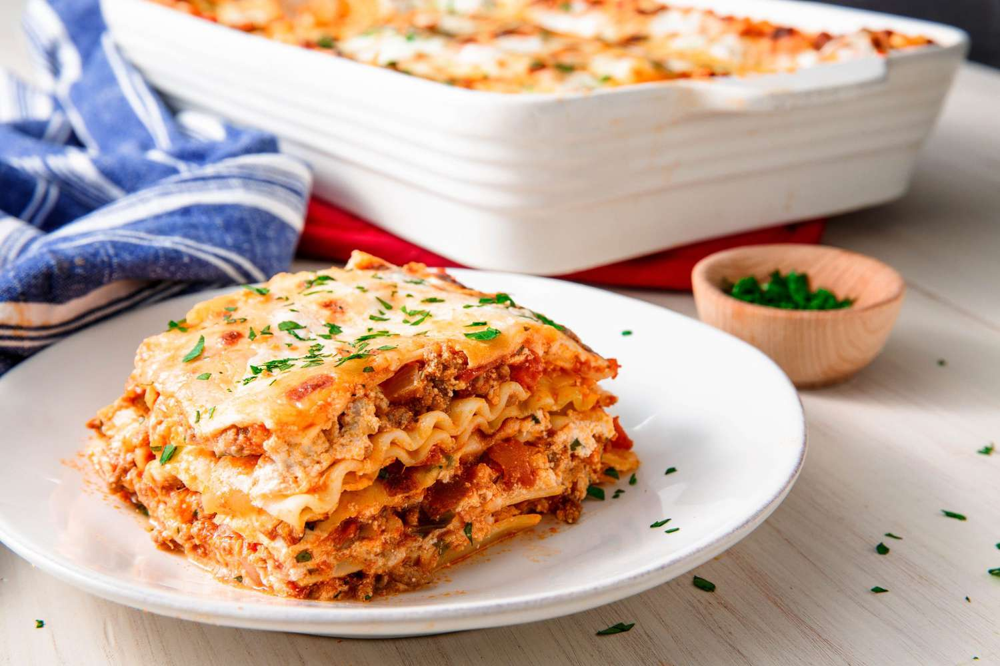

Lasagna

Recipe of The Best Lasagna In The World
This Lasagna Recipe is easy to make with a creamy
ricotta cheese mixture, savory meat sauce, and mozzarella cheese.
BONUS: it's make-ahead and freezer-friendly!
Ingredients
- creamy ricotta mixture
- savory meat sauce
- mozzarella cheese
Steps
- Spoon meat sauce on the bottom of a lightly greased casserole dish.
- Add 4 boiled lasagna noodles (or use no-boil or fresh noodles).
- Spread 1/3 of the ricotta cheese mixture on top.
- Add 1.5 cups of meat sauce.
- Repeat the same layers two more times.
- Top with mozzarella cheese. Cover and bake at 375° for 30 minutes.
- Remove cover and bake for 15 more minutes.
- Broil at the end if desired
- Let it rest for 15 minutes prior to serving with Garlic Bread With Cheese